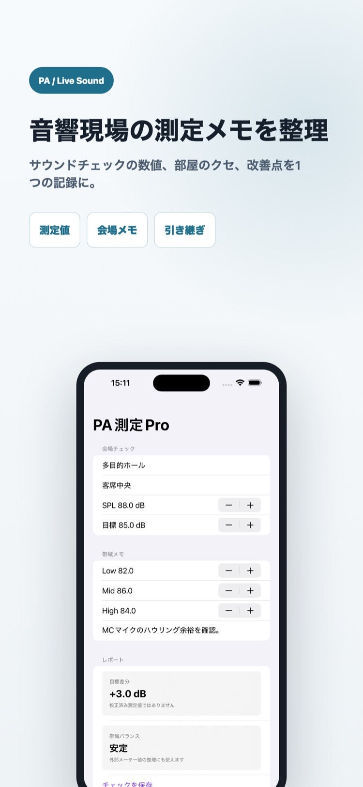
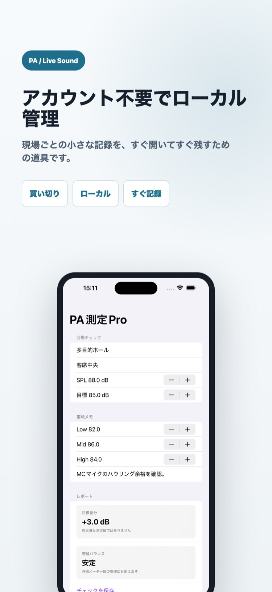

向いている人
PAオペレーター、ライブ音響担当、会場スタッフ向け。
7月23日まで導入価格 1500円（通常3000円）
外部測定器で確認したSPLや帯域値、会場・測定位置、現場メモを1つのレポートにまとめられます。

PAオペレーター、ライブ音響担当、会場スタッフ向け。
本番後に紙メモやスクリーンショットが散らばると、次回の仕込みに活かせません。


SPLや帯域値を確認できる外部測定器。
測定値、目標値、会場、測定位置、現場メモを1件にまとめます。
保存した現場レポートをテキストで共有できます。
いいえ。外部測定器で確認したSPLや帯域値を手入力して整理するアプリです。
会場、測定位置、SPL、目標値、Low・Mid・Highの値、現場メモを保存できます。
はい。保存したレポートをテキストで共有できます。
すでに外部測定器を使い、サウンドチェック結果を会場ごとに再利用したいPA担当者向けです。自動測定や音響解析が目的の場合は向きません。
PA音響測定レポートProは1500円（7月23日まで・通常3000円）の買い切りです。機能と対応端末はApp Storeで確認できます。